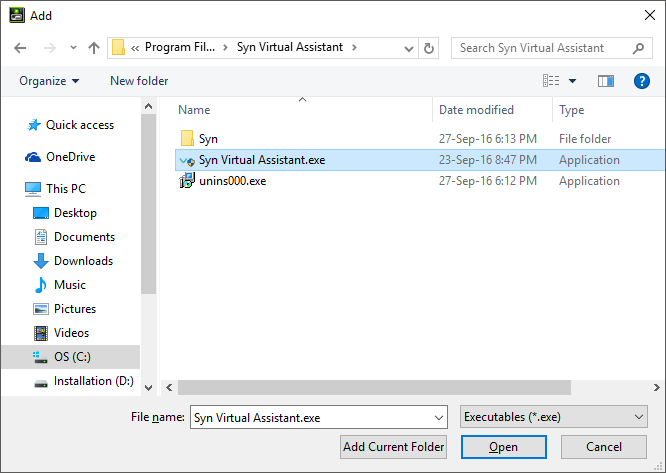

Troubleshooting (Known Issues)
Though in future version we will make an attempt to automatically address the following issues there
Graphic Device Unsupported
System.NotSupportedException: Could not find a graphics device that supports the HiDef profile
This is a known issue in Laptops and NoteBooks with switchable graphics.
Solution 1
If you have switchable graphics options try the following for NVIDIA based graphic cards.
- Right click on your desktop and select NVIDIA Control Panel

- Under Program Settings, choose Add

- Browse to the installation directory of Syn Virtual Assistant, select Syn Virtual Assistant.exe and choose Open

- Select High-performance NVIDIA Processor and choose **Apply
- Restart Syn Virtual Assistant.
Solution 2
If the system doesn't have a dedicated graphic card that supports the Graphic Engine for Syn Virtual Assistant then to run the application without any graphic exceptions being generated it is recommended that you swith to Dock Mode in Display Modes.
To switch the Virtual Assistant to run in Dock Mode,
- Click on Settings Button
- In Settings Panel select Display Mode
- Under Display Modes, choose Right-Dock and select Save and Restart.
Start Menu Path Access
System.UnauthorizedAccessException: Access to the path 'C:\Users\USER-NAME\AppData\Roaming\Microsoft\Windows\Start Menu\Programs' is denied.
This is a common error in Windows 7 and should be ignored in version 8.5.6.
The reason behind this exception is because the Launcher plugin tries to search for all installed applications and their shortcuts in the Start Menu folder so that you can use commands to launch them via the Virtual Assistant.
Speech Recognizer ID
System.ArgumentException: No recognizer of the required ID found.
Syn Virtual Assistant by default uses en-US speech recognizer. If a speech recognizer for US English is unavailable the above exception may be thrown.
A possible solution is to download a language pack with support for en-US speech recognizer. To do this,
- You add a new language pack by going to Settings > Time & language > Region & language > Add a language and choosing English (United States).
- After the language pack is installed click on Options on the language pack name and select Speech and choose Download to download the Speech Recognizer language pack.
- Once the download has finished, restart Syn Virtual Assistant.
Slow Framerate
During the initial unit-tests done when the Graphic Engine was incorportated into the Syn Virtual Assistant Main Window, we noticed that certain laptop brands would not run Syn Virtual Assistant with the best Graphic Card available in their machine.
For instance, some Dell laptops have an integrated Intel Graphic chip and as well as an NVIDIA Graphic Card on board. When the Virtual Assistant runs, the Intel Graphic Card is selected by the Operating System as the Graphic Processor. This results in low frame rate and unresponsive user interface.
Setting the Graphic Processor
A reliable solution to ensure that the right Graphic Processor is set for the Virtual Assistant application is to explicitly set the default Graphic Processor. In laptops using the NVIDIA graphic card, just right click the Virtual Assistant icon on your desktop, select Run with graphic processor then click on Change default graphic processor and set NVIDIA as the default graphic processor.